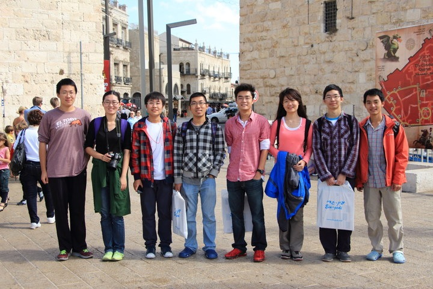

About Me
My research
Here is my CV.
Here is my DBLP link.
My Strength Set
These strengths of mine are explored by Gallup StrengthQuest. Not necessarily accurate, just for a quick reference about me.
- Includer: accepting of others.
- Individualization: intrigued with the unique qualities of each person.
- Maximizer: seek to transform something strong into something superb.
- Focus: prioritize, then act.
- Futuristic: inspired by the future and what could be.
Life at Technion
During the last year of my undergrad, I joined a research exchange program at Technion in Israel, advised by Professor Daniel Freedman. I enjoyed the total immerse of English environment --- both research and courses. I also enjoyed the life in that beautiful and mysterious country.
We travelled to Jerusalem, the Dead Sea, Bahaii Gardens, Beach at Haifa, Tel-aviv and Akko. Below is a photo of our group in the Old City of Jerusalem.

Hobbies
Baseball
I have been playing slowpitch softball for over two years. I love this sport, and I am the founder and former captain of EECS Baseball Team in Peking University. Here is a photo of our team.
{kind=link}
And here is a photo of me playing slowpitch.
{kind=link}
We got the CHAMPION of the PKU campus slowpitch competitions!!! We are thrilled at this!
{kind=link}
{kind=link}
Amateur Photography
I used to have a camera, but it got stolen. From then on I only use cellphone to take photos (in my undergrad). I am quite unprofessional and only do it for fun. Here is my little gallery in Instagram.
Chinese Tea
I love making and tasting Chinese tea! I have all kinds of tea in my tea house here in California, and HERE is an introduction about it.
Links to my Friends
My friends are all promising stars in the future academia!
- Donghao Ren: A romantic photographer, designer, builder, Visualization researcher
- Scott Cheng: A passionate designer, builder, HCIer
- Haoyu Zhang: A Distributed System guy, fast learner
- Yilun Zhang: Someone who models the world as a complex system; A Physics-CS guy.
And these are my dear professors:
- Daniel Freedman: My professor in Technion-Peking research exchange program. My research and life advisor.
- Yafei Dai: My advisor in Peking University. She is a really nice, gentle and helpful teacher.
- Ymir Vigfusson: Great professor, cook and pianist. We all enjoy the chats and dinners with him at Technion.